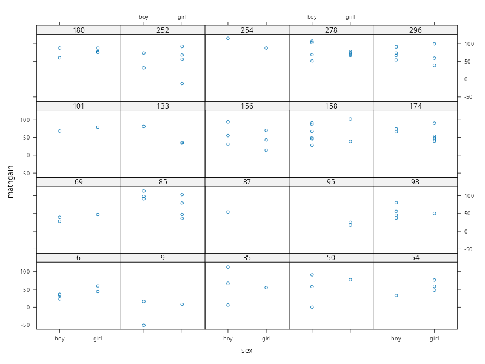
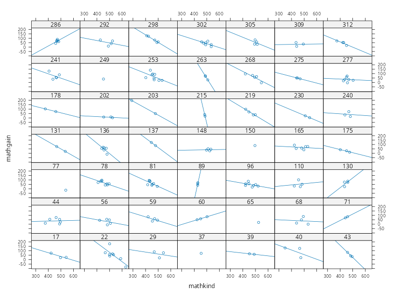
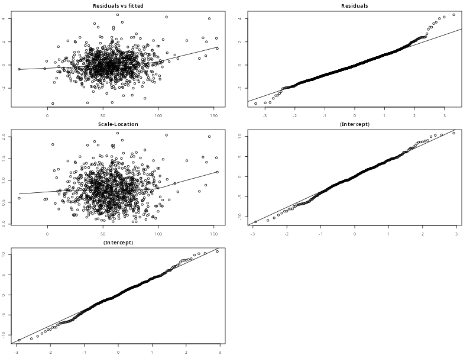
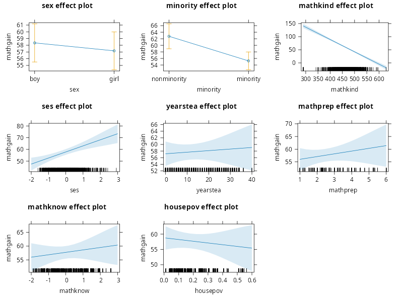

PCHN63112 Workshop: Three-level Clustered Data Example#
In this example,we will examine building a mixed-effects model for clustered data that contains three levels of variation. This will demonstrate how the multilevel framework extends beyond two levels, as well as how this can be integrated into a mixed-effects model. This is also a much larger example, with many variables available. This will result in a more complex expression for the model, but one which is a simple generalisation of examples seen before.
Loading Packages#
We will start by loading all the packages that we need at the beginning. This will tidy-up the output, allow any messages or warnings to not clutter up the rest of the output and not bury any packages within the main body of the analysis. We also use source() on the file plot-lme.R. This needs to be in the current working directory and will bring the custom function plot.lme() into scope.
library('lattice') # plotting functions
library('nlme') # mixed-effects modelling
library('car') # Asymptotic ANOVA tests and VIF
library('effects') # Effects plots from the model
source('plot-lme.R') # custom plot.lme() function for making assumptions plots
Loading required package: carData
Use the command
lattice::trellis.par.set(effectsTheme())
to customize lattice options for effects plots.
See ?effectsTheme for details.
The Classroom Data#
The data we will use concern measurements of improvement in maths ability in a selection of students from different classrooms across different schools. In total, these data contains measurements from 1,190 students from 312 classrooms from 107 schools. Importantly, these data were measured from first-graders in the USA (ages 6-7). As such, all students stay within the same classroom with the same teacher for the whole year. A wide variety of additional variables were captured describing the local area of the school, the teacher’s experience and maths knowledge, and the student’s demographic details.
The data can be downloaded from here. Once downloaded to the current working directory, the code below will read the data into R and then print values for the first two classrooms from the first school
classroom <- read.csv('classroom.csv')
print(classroom[1:11,])
sex minority mathkind mathgain ses yearstea mathknow housepov mathprep classid schoolid childid
1 1 1 448 32 0.46 1 NA 0.082 2.00 160 1 1
2 0 1 460 109 -0.27 1 NA 0.082 2.00 160 1 2
3 1 1 511 56 -0.03 1 NA 0.082 2.00 160 1 3
4 0 1 449 83 -0.38 2 -0.11 0.082 3.25 217 1 4
5 0 1 425 53 -0.03 2 -0.11 0.082 3.25 217 1 5
6 1 1 450 65 0.76 2 -0.11 0.082 3.25 217 1 6
7 0 1 452 51 -0.03 2 -0.11 0.082 3.25 217 1 7
8 0 1 443 66 0.20 2 -0.11 0.082 3.25 217 1 8
9 1 1 422 88 0.64 2 -0.11 0.082 3.25 217 1 9
10 0 1 480 -7 0.13 2 -0.11 0.082 3.25 217 1 10
11 0 1 502 60 0.83 2 -0.11 0.082 3.25 217 1 11
There are quite a few variables here, so we split them into those that relate to each school as a whole, each classroom as a whole and each pupil as a whole.
School
schoolid: the unique index of each schoolhousepov: proportion of households in the local area below the poverty line
Classroom
classid: the unique index of each classroomyearstea: the teacher’s years of experiencemathprep: the amount of training in mathematics education the teacher has undertakenmathknow: the amount of mathematics knowledge the teacher has
Student
childid: the unique index of each studentmathgain: the student’s gain in maths achievement over the yearsex: the student’s sexmathkind: the student’s maths score in the previous (kindergarten) yearminority: whether the student is from an ethnic minority backgroundses: the student’s socioeconomic status
Some of these variables are simply indices to keep things organised and to allow us to define different levels of the data (schoolid, classid, childid). The outcome variable is mathgain, highlighted in bold, indicative of how much the student has improved over the year spent in one particular classroom. This leaves eight potential predictor variables that could explain why some students improve more than others.
As these data are already long-formatted, we just need to convert the relevant variables to factors. We also choose to relabel both sex and minority to make their meaning clearer
classroom$classid <- as.factor(classroom$classid)
classroom$schoolid <- as.factor(classroom$schoolid)
classroom$sex <- as.factor(classroom$sex)
classroom$minority <- as.factor(classroom$minority)
levels(classroom$sex) <- c('boy','girl')
levels(classroom$minority) <- c('nonminority', 'minority')
We can now briefly summarise all the variables. At this stage, we would usually produce some plots and do further data checking and wrangling, but we will leave this step to one side to keep the example shorter.
summary(classroom)
sex minority mathkind mathgain ses yearstea mathknow housepov
boy :588 nonminority:384 Min. :290.0 Min. :-110.00 Min. :-1.61000 Min. : 0.00 Min. :-2.5000 Min. :0.0120
girl:602 minority :806 1st Qu.:439.2 1st Qu.: 35.00 1st Qu.:-0.49000 1st Qu.: 4.00 1st Qu.:-0.7200 1st Qu.:0.0850
Median :466.0 Median : 56.00 Median :-0.03000 Median :10.00 Median :-0.1300 Median :0.1270
Mean :466.7 Mean : 57.57 Mean :-0.01298 Mean :12.21 Mean : 0.0312 Mean :0.1782
3rd Qu.:495.0 3rd Qu.: 77.00 3rd Qu.: 0.39750 3rd Qu.:20.00 3rd Qu.: 0.8500 3rd Qu.:0.2550
Max. :629.0 Max. : 253.00 Max. : 3.21000 Max. :40.00 Max. : 2.6100 Max. :0.5640
NA's :109
mathprep classid schoolid childid
Min. :1.000 26 : 10 11 : 31 Min. : 1.0
1st Qu.:2.000 42 : 10 12 : 27 1st Qu.: 298.2
Median :2.300 13 : 9 71 : 27 Median : 595.5
Mean :2.612 189 : 9 76 : 27 Mean : 595.5
3rd Qu.:3.000 205 : 9 77 : 24 3rd Qu.: 892.8
Max. :6.000 253 : 9 31 : 22 Max. :1190.0
(Other):1134 (Other):1032
Some elements of note from these summaries:
sexis largely balanced.minorityindicates that the majority of the sample are from ethnic minority backgrounds (67.73%).Some children have negative
mathgainscores, indicating that they got worse over the year.There is a wide variation in
yearstea, with some teachers having 40 years of experience and others having 0 years of teaching.There is also wide variation in
housepov, with some schools in areas with very little poverty (1% of local houses) and some schools in areas with high poverty (56% of local houses).There are 109 missing values in
mathknow, as some teachers were not measured on this predictor.
Model Notation#
In order to facilitate consistency across the examples in these workshops, we will represent all models using more general regression notation. For instance, whether a variable is categorical or continuous, it will be written in the model as e.g. \(\beta_{1}x_{i1}\). In the categorical case, it will be implicitly assumed that \(x_{i1}\) is a dummy variable. Although this will make the notation for models that only contain categorical variables busier, it will make things much clearer when we have models that contain both categorical and continuous predictors (as is the case with this example). In addition, we will be using variable labels going forward, rather than generic notation (e.g. \(\beta_{1} \times \text{SES}_{i}\) rather than \(\beta_{1}x_{1i}\)). This should hopefully make it clearer which variable each term relates to when writing the model down.
Data Structure#
Although we already know what structure these data have, we will run through the logic for completeness.
Firstly, we need to determine our unit of analysis. In this example, our model is trying to explain improvements in maths scores in students. The entities that our model is describing are the students themselves, so these are our units of analysis.
Secondly, we determine what each row of the long-formatted data represents in relation to the units of analysis. Examining the first few rows
head(classroom)
sex minority mathkind mathgain ses yearstea mathknow housepov mathprep classid schoolid childid
1 girl minority 448 32 0.46 1 NA 0.082 2.00 160 1 1
2 boy minority 460 109 -0.27 1 NA 0.082 2.00 160 1 2
3 girl minority 511 56 -0.03 1 NA 0.082 2.00 160 1 3
4 boy minority 449 83 -0.38 2 -0.11 0.082 3.25 217 1 4
5 boy minority 425 53 -0.03 2 -0.11 0.082 3.25 217 1 5
6 girl minority 450 65 0.76 2 -0.11 0.082 3.25 217 1 6
we can see that each row corresponds to a single unit (student) measured once. So these are neither repeated measurements or longitudinal data.
Finally, we need to determine whether there are any clustering variables that represent a higher-order dependency structure in these data. From what we can see above, there are several variables that are constant across multiple students: yearstea, mathknow, housepov, mathprep, classid and schoolid. Of those, only classid and schoolid are categorical and so are the only candidates for either grouping variables or clustering variables.
In terms of thinking about clustering variables as indicative of a shared environment, both classid and schoolid fit the description. These are both elements that each student is IN rather than something each student HAS. Students within a classroom may be correlated by virtue of sharing a teacher, sharing the same classmates and sharing the same teaching environment. Similarly, classrooms within a school may be correlated by virtue of sharing the same physical location, the same school budget and the same senior members of staff. The different schools represent the top boundary of dependence, because different schools will be independent of each other. Within a school, each classroom will have a degree of independence, as these are separate entities. However, they will also share a degree of dependence due to being within the same school. So this is a separate boundary of dependency. We imagine these as smaller covariance blocks within a larger covariance block.
Based on this, we can construct the following table of the levels of these data, using the guidance in the lesson
Data Type |
Clustered |
|---|---|
Dataset |
|
Level 1 |
Student |
Level 2 |
Classroom |
Level 3 |
School |
We could also imagine a more complex version of these data, where each student was measured at multiple points within a year. This would then be longitudinal clustered data with four levels. We would have time at Level 1, student at Level 2, classroom at Level 3 and school at Level 4. This would lead to a very complex dependency structure that would be difficult to reason about and build using a method like GLS. However, the mixed-effects framework allows us to build this carefully in layers, without ever having to touch the covariance structure.
Model Building#
To build a model of this dataset, we use the 3-step procedure outlined in the lesson. We assume at this point that the data has been investigated, wrangled, cleaned and is ready for modelling.
Step I: A Single Dependency Structure#
We start by isolating a single dependency structure. This needs to be at the lowest level, with no further dependency structures within. In this example, this is a single classroom. We choose classid == '174' for this purpose, after examining several candidates. This was chosen because it contains a reasonable number of measurements (7 students), has no missing data and has representation of both levels of minority. During this exploration, it was noted that many classrooms are constant in terms of minority, which will be important to bear in mind when fitting the model.
classroom.1 <- subset(classroom, classid=='174')
print(classroom.1)
sex minority mathkind mathgain ses yearstea mathknow housepov mathprep classid schoolid childid
912 girl minority 474 90 0.04 11 1.75 0.21 2 174 81 912
913 boy nonminority 430 74 -0.03 11 1.75 0.21 2 174 81 913
914 girl nonminority 452 44 -0.67 11 1.75 0.21 2 174 81 914
915 girl nonminority 428 53 -0.42 11 1.75 0.21 2 174 81 915
916 boy minority 452 66 -0.73 11 1.75 0.21 2 174 81 916
917 girl nonminority 485 40 -0.78 11 1.75 0.21 2 174 81 917
918 girl minority 458 48 -0.44 11 1.75 0.21 2 174 81 918
In terms of the variables suitable for an individual model of a single classroom, we note that many of those above are constant because they are defined either at the level of a classroom as a whole, or a school as a whole. As such, they are not suitable for modelling the individual students. We remove these below
classroom.1 <- subset(classroom, classid=='174', select=c(-yearstea,-mathknow,-housepov,-mathprep,-classid,-schoolid))
print(classroom.1)
sex minority mathkind mathgain ses childid
912 girl minority 474 90 0.04 912
913 boy nonminority 430 74 -0.03 913
914 girl nonminority 452 44 -0.67 914
915 girl nonminority 428 53 -0.42 915
916 boy minority 452 66 -0.73 916
917 girl nonminority 485 40 -0.78 917
918 girl minority 458 48 -0.44 918
Based on this, our basic model for a single student within this classroom is
where \(i\) indexes the student, \(j\) indexes sex \((j = 1,2)\) and \(k\) indexes minority \((k = 1,2)\). Both \(\text{sex}_{j}\) and \(\text{minority}_{k}\) are dummy variables that code the categorical effects, defined as
We can fit this model in R as shown below
class.1.lm <- lm(mathgain ~ 1 + mathkind + ses + sex + minority, data=classroom.1)
summary(class.1.lm)
Call:
lm(formula = mathgain ~ 1 + mathkind + ses + sex + minority,
data = classroom.1)
Residuals:
912 913 914 915 916 917 918
6.898 -5.146 2.530 4.895 5.146 -2.279 -12.043
Coefficients:
Estimate Std. Error t value Pr(>|t|)
(Intercept) 8.9519 125.7963 0.071 0.950
mathkind 0.1662 0.2936 0.566 0.628
ses 42.4991 15.7473 2.699 0.114
sexgirl -14.1331 11.4198 -1.238 0.341
minorityminority 7.8017 10.3018 0.757 0.528
Residual standard error: 11.86 on 2 degrees of freedom
Multiple R-squared: 0.8578, Adjusted R-squared: 0.5735
F-statistic: 3.017 on 4 and 2 DF, p-value: 0.2641
However, notice that there are only 2 residual degrees of freedom left because we have fit 5 parameters to 7 datapoints. If we had fewer students in this class, the model would fail to fit. Unfortunately, the data are quite limited for most of the classrooms. To see this, we use the code below to select 20 random classrooms and then plot them as panels with sex on the \(x\)-axis.
set.seed(666)
keep.IDs <- sample(unique(classroom$classid), 20) # select 20 random class IDs
xyplot(mathgain ~ sex | classid, # x-axis=sex, panels=classroom
data = subset(classroom, classid %in% keep.IDs), # only random class IDs
type = 'p' # points
)

As we can see, some classrooms have much less data than others. For instance, some classrooms only have a single student who was measured, whereas in others multiple students were measured but only one of them was a girl. This suggests already that data will need be to pooled across classrooms in order to estimate effects of sex. There is a similar story with minority, but we leave generating this plot as an exercise.
Step II: Expand to Multiple Structures#
In our second step, we expand the model above to multiple classrooms. We index these using the notation of \((c)\), to indicate which terms belong to a particular classroom. We start with the most general case of allowing every term to vary by-classroom, giving us
We can now reason more carefully about each of these.
In terms of \(\beta^{(c)}_{0}\), if we want to use a mixed-effects models then the bear minimum is a random intercept term. Allowing \(\beta^{(c)}_{0}\) to differ per-classroom implies that each classroom is a random sample from a distribution of classrooms. The degree of \(\text{mathgain}\) depends upon the specific classroom environment and the specific teacher, rather than being the same across all classrooms. If it were the same, this would imply that any differences across students are down to the student’s own characteristics and it would not matter if the student was in a different classroom or in a different school. In this scenario, the classroom has no bearing on the outcome. Instead, we can choose treat each classroom as a distribution of \(\text{mathgain}\) scores with its own specific average value of \(\text{mathgain}\) that will differ from other classrooms. In this scenario, the classroom does have an effect on the outcome, implying that an individual student may perform differently in a different classroom. In addition, given that classroom is our clustering variable, it is usually sensible to treat this as random rather than fixed.
The remaining terms present more of a challenge. For each of these, consider the implication of treating them as random rather than fixed
\(\beta_{1}^{(c)}\) — The relationship between a student’s kindergarten score and their eventual value of \(\text{mathgain}\) depends upon the classroom environment, with some classes associated with a much stronger relationship than others.
\(\beta_{2}^{(c)}\) — The relationship between a student’s socioeconomic status and their eventual value of \(\text{mathgain}\) depends upon the classroom environment, with some classes associated with a much stronger relationship than others.
\(\beta_{3}^{(c)}\) — Any differences in \(\text{mathgain}\) between boys and girls depends upon the classroom environment, with some classes showing a smaller gaps and some showing a wider gap.
\(\beta_{4}^{(c)}\) — Any differences in \(\text{mathgain}\) between minority and non-minority children depends upon the classroom environment, with some classes showing a smaller gaps and some showing a wider gaps.
In all cases, simply reasoning about these terms will depend upon how much we believe teachers are able to influence individual students, despite their characteristics. This can get a bit philosophical, depending upon whether we believe students are handed to teachers as a tabula rasa, available for molding in whatever shape the teacher desires, or whether there are pre-existing characteristics of each student that will dictate performance irrespective of the efforts of individual teachers. Certainly, we could imagine individual teachers who are able to create an environment where students can excel irrespective of these factors, but do we believe this is something that varies enough across different classrooms and schools to offset any strong global pattern?
When faced with such difficulties, we can take a more data-driven approach to the decision. For instance, we could plot the data for mathkind within a larger selection of classrooms
set.seed(123)
keep.IDs <- sample(unique(classroom$classid), 49) # select 49 random class IDs (7 x 7)
xyplot(mathgain ~ mathkind | classid, # x-axis=mathkind, panels=classroom
data = subset(classroom, classid %in% keep.IDs), # only random class IDs
type = c('p','r'), # points and regression lines
)

On an initial look, the slopes look quite varied, which might push us towards thinking about \(\beta^{(c)}_{1}\) as random. However, we need to consider the amount of data within each classroom. Notice that the majority of slopes are either flat or negative, which suggests a general global pattern where the greater the student’s earlier performance, the less improvement they will make. Those classrooms with more extreme slopes are generally those with a much narrower range of mathkind scores. For instance, classroom 89 has a very extreme slope, but little in the way of variation in mathkind scores. So, unfortunately, it is very hard to tell whether these slopes represent fundamental differences between the classrooms, or are simply a result of sampling noise. At this stage, this does not help with the question of random or fixed.
It was recommended in the accompanying lesson that in cases of uncertainty we simply treat everything as random and then use model comparisons. However, there is a catch with this approach. If we do this here we will have 5 random effects, which will mean 5 error terms and 5 variances. This will almost certainly be too much for the random effects algorithm to fit. So even if we desire this theoretically, in terms of practicality we will almost certainly be forced to simplify. Nervousness about fitting this model is also justified when we consider that the amount of data per-classroom is very limited, with only a small number of classrooms that would be able to fit the model we want. This means that a lot of pooling and shrinkage will be going on, with many of the effects based on no data for a particular classroom. Indeed, the average number of students per-classroom is
mean(table(classroom$classid))
[1] 3.814103
which is very small. Realistically, if we want the full random-effects specification we need much larger samples within each classroom. Of course, we could power through and see whether a model with all these random terms can be fit, but we will save you the trouble and tell you that it cannot. This is more of a brute force approach, which we do not recommend, but ultimately there is no harm in trying. So, we do need to simplify at this point.
On the basis that it quite a strong assumption to think that individual teachers are able to undo fundamental effects of sex, minority status, existing maths achievement and socioeconomic status, we choose to treat all these terms as fixed, leaving only the intercept as random. This implies that individual teachers and classroom environments are able to raise or lower all values of \(\text{mathgain}\) by some amount. So, under some teachers all students do better or worse, like a rising tide lifting all boats. However, within those students, there are global effects of sex, minority status, prior achievement and socioeconomic status that are in play that do not depend upon an individual teacher or classroom environment. Although this does create something of a fatalistic perspective on student performance, it does have the benefit of greatly simplifying our model.
Step III: Write the Higher-level Models#
Now that we have made a decision about all the Level 1 terms, we can write the Level 2 models for each term. As \(\beta_{0}^{(c)}\) is the only random term, it is the only Level 2 model with an error term. This gives
At this point, we can decide whether there are any classroom-level variables we also want to include in these models. Looking back to our data description from earlier, the additional variables we have available are yearstea, mathprep and mathknow. These apply to individual teachers as a whole and thus could be used to explain average mathgain for a whole class. As such, our first option is to add these variables as predictors of \(\beta_{0}^{(c)}\), giving
Our next option is whether to include these predictor within the models for the remaining effects of mathkind, ses, sex or minority. Because these are models of effects (i.e. regression slopes), any additional predictors will enter as interactions. In order to keep things simple, we will not entertain this possibility. In general, we would need strong reasons for including these, given the additional complexity. For instance, if we had strong reason to think that yearstea influences the difference in attainment between boys and girls, we could use
at Level 2. When collapsed back into Level 1 this would create the interaction sex:yearstea, implying that the regression slope between years of teaching experience and maths attainment differs between boys and girls. Perhaps more experienced teachers are able to close the gap more than less experienced teachers? Although plausible, this is an additional level of complexity that may not be warranted without good evidence. To keep things simple, we will not include terms like this. This is akin to the general approach of building a multiple regression model, where we do not tend to just throw in interactions between the predictors unless we have very good reason to.
Expand to Multiple Schools#
At this point, we have a perfectly useable two-level model that would be suitable for one school. However, we know that we have an additional level of clustering in the form of different schools. This means we need to repeat some of our process from above, but for Level 2 instead. So, let us take the Level 2 specification and expand it to multiple schools. We will use a similar notation to earlier, where terms that can differ by school are indicated by superscript \((s)\). In addition, we will adjust our notation for a single classroom from \((c)\) to \((c|s)\), to make it clear that classrooms are nested within specific school. In other words, classroom 1 is not the same entity across different schools. So, you can read \((c|s)\) as classroom \(c\) within school \(s\).
If we start by allowing every term to vary by-school, we get
So, we now have to work through each of the new school-specific terms and decide whether to treat them as fixed or random. In other words, is each term allowed to differ across schools or not.
This is a similar process to reasoning about individual classrooms. The minimum we need to accommodate the influence of different schools is to allow the intercept to differ across schools. So, we opt to treat \(\beta_{0}^{(s)}\) as random. This captures the idea that each school is a random sample from a population of schools and that our inference is not restricted to only those schools in our sample. In other word, each school has its own unique level of maths attainment that represents each school’s status as an independent and unique environment.
… HERE …
The remaining terms represent a similar complexity to earlier. Although we could keep each one as random, it is very unlikely that the data would support this. Again, you could try but it is likely that this will fail. So, we already desire some degree of simplification. If we take \(\beta_{3}\) as an example, this is the regression slope associated with the experience of each teacher. If we leave this as fixed we are suggesting that the relationship between years of experience and maths improvement is a global effect across all schools. There is no influence of different schools here, there is just a general pattern that (for instance) more experienced teachers are able to engineer the biggest improvements. If we make this random, we are suggesting that the effect of teacher experience differs on a per-school basis. This seems less likely, but we could imagine a scenario where some schools give teachers more freedom to adapt their teaching style and make use of their experience, whereas others may be more rigid in their requirements. In reality, most schools probably would not be able to completely neuter a teacher’s years of experience from influencing student grades. In fact, this would never really be desirable. So, in this case, given our additional desire for simplicity, we choose to treat \(\beta_{3}\) as fixed. In other words, the effect of teacher experience on improvements in maths grades does not depend upon the school they happen to work in.
We can reason about the terms such as \(\beta_{4}\) (the relationship between maths scores and teacher preparation) and \(\beta_{5}\) (the relationship between maths scores and teacher knowledge) in a similar way and reach a similar conclusion that these terms can be fixed. Terms such as \(\beta_{1}\) (the relationship between maths scores and earlier attainment), \(\beta_{2}\) (the relationship between maths scores and socioeconomic status), \(\text{sex}_{j}\) and \(\text{minority}_{k}\) are a little trickier. However, in these cases it seems unlikely that there would be vast school-specific differences here. It could be that some schools have campaigns designed to reduce performance gaps between sexes, or have specific measures in place to target students will low earlier attainment. However, we need this to be a enough of a consistent difference across schools to create vastly different relationships that depend upon each school individually. Given that we have no knowledge of this, it becomes somewhat fanciful and so, with no other information to hand about these school differences, we choose to fix these terms as well. So, our level 3 model is now
Because \(\text{mean}^{(s)}\) is the only random term, this is the only model with an error-term. This means we will be able to simplify this specification down dramatically, but we keep it in its full form for the moment.
Our final step is deciding whether there are any school-level variables that we wish to include in the Level 3 models. Looking back at the data description from earlier, we can see that the only school-level variable is housepov, representing the proportion of local houses around the school that are below the poverty line. As we saw at Level 2, this will enter first as an additional predictor for the mean, suggesting that average maths attainment within a specific school is influenced by the amount of local poverty. For the remaining models, this would enter as an interaction with the term being modelled. For instance, we could explain the effect of sex across schools in terms of a global effect of sex plus the interaction between sex and housepov. This would imply that the degree of local poverty impacts boys and girls differently, in terms of their maths attainment. This does not seem a wholly obvious thing to include in the model without having more information to suggest otherwise. So, much like the Level 2 model, we maintain simplicity by not entertaining any additional interactions.Based on all this, the final Level 3 specification is
The Final Model (Full and Simplified)#
The full model is now (deep breath)
which is pretty complicated and unwieldly. However, we can simplify this dramatically by first collapsing the fixed Level 3 terms back into Level 2
and then collapsing the fixed Level 2 terms back into Level 1
So now the model form should be much clearer. We are assuming 3 separate distributions for the data. The highest-level distribution represents the population of all schools. The next level represents the distribution of classes within a single school, and the lowest-level represents the distribution of students within a single class from a single school. The average attainment score of a school is influenced by the population average attainment plus the effect of local poverty. The average attainment within a single class is influence by the school average plus effects associated with the teacher of that class. Finally, the attainment of a single pupil is influenced by the class average plus effects associated with their own personal characteristics and background.
Fitting the Model in R#
In order to fit the model above in R, we have to collapse all the levels together. After doing this and organising the terms in a logical order, we have
Notice that we have tried to keep terms associated with students, classrooms and schools together, as well as separating out the error terms. In terms of the random effects specification, we start with the error terms
and then remove the final error term that has indices that match the raw data. This gives
Now, we change the notation to make the conditional aspects of these terms clearer. However, notice that these terms have different conditional superscripts. One is associated with schools and one is associated with classes. So we have
implying that we need both 1|schoolid and 1|classid in the model.
How do we do this? The way lme() handles this situation is by passing a list to the random= option. Within this list, we label each field using the clustering variable and then give the model formula. Due to the labelling, the conditional syntax is implied and does not need to be given explicitly. So, for both 1|classid and 1|schoolid we can use list(classid = ~ 1, schoolid = ~ 1). This gives us full control of the random-effects specification at each level. Our model can therefore be expressed to lme() uisng the following syntax
classroom.lme <- lme(fixed = mathgain ~ 1 + sex + minority + mathkind + ses + yearstea + mathprep + mathknow + housepov,
random = list(classid = ~ 1,
schoolid = ~ 1),
data=classroom,
control=lmeControl(opt='optim'),
na.action = na.omit
)
There are a couple of elements to note here. Firstly, we have again had to change the optimiser to get this model to fit. Secondly, because the data contains NA values, we have had to tell lme() what to do with them. By default, lme() will refuse to fit a model on data that contains NA. Although we have indicated that mixed-effects models are useful in cases of missing data, they cannot be fit to data with non-numeric substitutes for that missing data. As such, we have to tell lme() to remove those values before fitting. The data are then missing by omission, rather than containing some indication of their missingness.
Printing the model output below should give us everything that we expect.
print(classroom.lme)
Linear mixed-effects model fit by REML
Data: classroom
Log-restricted-likelihood: -5159.077
Fixed: mathgain ~ 1 + sex + minority + mathkind + ses + yearstea + mathprep + mathknow + housepov
(Intercept) sexgirl minorityminority mathkind ses yearstea mathprep mathknow
280.5753000 -1.1818489 -7.5017659 -0.4700709 5.1755649 0.0476315 1.0794518 0.8819618
housepov
-5.6236280
Random effects:
Formula: ~1 | classid
(Intercept)
StdDev: 9.063104
Formula: ~1 | schoolid %in% classid
(Intercept) Residual
StdDev: 9.063104 26.71224
Number of Observations: 1081
Number of Groups:
classid schoolid %in% classid
285 285
As expected, there are 3 variances estimates from the 3 error terms. One associated with variance between classes, one associated with variance between schools and one associated with students within classes (the residual variance term).
Usually, at this point, we might also have a look at the marginal covariance structure for a specific class within a specific school, or for all the classes from across several schools. Unfortunately, the getVarCov() function does not work for models with more than 2 levels
Sigma.1 <- try(getVarCov(classroom.lme))
Error in getVarCov.lme(classroom.lme) :
not implemented for multiple levels of nesting
As such, our only options here are to try and reconstruct this manually (which is a non-trivial thing to try and do), or we move on without this. In principle, we do not need to see this structure, as the focus of mixed-effects models are not the covariance form. This is what makes them distinct from a method like GLS. In this example, we can easily infer the structure based on what we have estimated. Given that we have a variance term for classes (\(\sigma^{2}_{\text{class}}\)), a variance term for schools (\(\sigma^{2}_{\text{school}}\)) and a residual variance term (\(\sigma^{2}\)), we can infer that we will have a covariance block for each school individually, and within each school we will have sub-blocks for each classroom. The covariance between all observations from different school will be 0. The covariance between different classrooms from the same school will be \(\sigma^{2}_{\text{school}}\) and the covariance between students within the same classroom will be \(\sigma^{2}_{\text{class}} + \sigma^{2}_{\text{school}}\). The variance terms on the diagonal will all be \(\sigma^{2}_{\text{class}} + \sigma^{2}_{\text{school}} + \sigma^{2}\).
Alternative Models#
At this point, we would usually consider alternative models and make some model comparisons. For this particular model, we have currently included all fixed-effects and have reasoned that many of the alternative random effects structures are either not sensible or not possible. However, this would now be an opportunity to test this on the actual data. For example, if we felt very strongly that the effect of sex should differ on a per-school basis, then we could perform a comparison with a model containing an additional random-effect of sex at the school-level. This would encode the idea that there is a difference in attainment between boys and girls, but that this differs across schools. We do not think this is really the case, but for the purpose of illustration we could test it in the following way. Here, we use the update() function, where we can pass in a model and then just indicate the arguments that we want to change. This is helpful when we have a lot of options, but only want to change one small thing.
lme.null <- lme(fixed = mathgain ~ 1 + sex + minority + mathkind + ses + yearstea + mathprep + mathknow + housepov,
random = list(classid = ~ 1,
schoolid = ~ 1), # random intercept only
data = classroom,
control = lmeControl(opt='optim'),
na.action = na.omit,
method = 'ML'
)
lme.full <- update(lme.null, random=list(classid = ~ 1,
schoolid = ~ 1 + sex) # sex included
)
mod.comp <- BIC(lme.null,lme.full)
print(mod.comp)
abs(mod.comp$BIC[1] - mod.comp$BIC[2])
df BIC
lme.null 12 10414.98
lme.full 14 10426.98
[1] 11.99776
This suggests very strong evidence in favour of the lower BIC model, which is the one without a random effect of sex. This is not wholly surprising because we didn’t really entertain this idea in the first place. However, this does demonstrate how you can use model comparisons to help make these decisions.
Simplifying the Random-effects#
At this stage, we would also entertain the idea of simplifying the random effects. However, for this example, the random effects structure cannot get any simpler. The only thing we could do is drop either schoolid or classid entirely. However, we want to keep these as we want to embed the idea of both school and classroom representing random samples from a larger population. Otherwise, our inference is restricted to only the classes we have sampled, only the schools we have sampled, or both. So, for this example, we leave everything how it is.
Additional Variance Structures#
As a final step before inference, we also need to consider whether any additional variance structures are warranted. Although we cannot see the covariance structure for this model, we have inferred that it does not allow variances to differ between classrooms or between schools. Although we might think to add this in to a weights= structure, we have issues with this dataset. In terms of both classrooom
table(classroom$classid)
1 2 3 4 5 6 7 8 9 10 11 12 13 14 15 16 17 18 19 20 21 22 23 24 25 26 27 28 29 30 31 32 33 34 35 36
5 3 3 6 1 5 1 4 3 2 4 5 9 4 1 6 3 1 2 3 4 8 1 1 4 10 6 5 3 4 4 4 4 1 4 1
37 38 39 40 41 42 43 44 45 46 47 48 49 50 51 52 53 54 55 56 57 58 59 60 61 62 63 64 65 66 67 68 69 70 71 72
1 7 2 3 5 10 3 6 5 5 1 4 6 4 6 2 5 4 5 5 4 1 4 3 2 2 2 5 1 6 2 4 3 1 2 3
73 74 75 76 77 78 79 80 81 82 83 84 85 86 87 88 89 90 91 92 93 94 95 96 97 98 99 100 101 102 103 104 105 106 107 108
3 1 6 4 1 8 5 6 8 5 7 1 7 5 1 2 3 2 4 1 1 6 2 8 2 5 1 1 2 3 3 6 4 2 4 3
109 110 111 112 113 114 115 116 117 118 119 120 121 122 123 124 125 126 127 128 129 130 131 132 133 134 135 136 137 138 139 140 141 142 143 144
4 4 3 2 3 4 4 2 8 1 1 8 6 6 8 1 4 6 3 4 3 4 2 3 3 4 7 6 2 5 4 2 5 4 6 3
145 146 147 148 149 150 151 152 153 154 155 156 157 158 159 160 161 162 163 164 165 166 167 168 169 170 171 172 173 174 175 176 177 178 179 180
5 3 5 4 4 1 2 6 6 2 3 6 4 8 4 3 4 2 1 5 6 4 5 7 6 2 1 4 2 7 3 4 3 2 2 6
181 182 183 184 185 186 187 188 189 190 191 192 193 194 195 196 197 198 199 200 201 202 203 204 205 206 207 208 209 210 211 212 213 214 215 216
1 5 3 5 1 6 1 4 9 8 1 2 2 2 4 3 2 2 1 6 5 3 2 2 9 5 6 4 2 3 4 4 3 1 2 2
217 218 219 220 221 222 223 224 225 226 227 228 229 230 231 232 233 234 235 236 237 238 239 240 241 242 243 244 245 246 247 248 249 250 251 252
8 2 4 2 2 4 4 5 3 2 2 3 5 2 8 2 1 7 6 2 3 1 2 3 5 7 4 1 3 4 5 6 1 2 3 6
253 254 255 256 257 258 259 260 261 262 263 264 265 266 267 268 269 270 271 272 273 274 275 276 277 278 279 280 281 282 283 284 285 286 287 288
9 2 6 1 4 3 8 3 1 5 3 7 4 5 3 5 2 3 3 1 5 1 3 7 7 8 7 5 4 2 2 3 3 6 5 4
289 290 291 292 293 294 295 296 297 298 299 300 301 302 303 304 305 306 307 308 309 310 311 312
5 3 4 4 4 3 1 7 5 5 6 5 2 7 4 4 4 4 4 3 3 3 2 4
and school
table(classroom$schoolid)
1 2 3 4 5 6 7 8 9 10 11 12 13 14 15 16 17 18 19 20 21 22 23 24 25 26 27 28 29 30 31 32 33 34 35 36
11 10 14 6 6 12 14 16 6 18 31 27 9 15 13 6 9 4 11 12 17 4 5 8 7 15 21 10 8 3 22 9 22 7 11 8
37 38 39 40 41 42 43 44 45 46 47 48 49 50 51 52 53 54 55 56 57 58 59 60 61 62 63 64 65 66 67 68 69 70 71 72
11 9 12 7 9 18 4 17 5 13 10 6 8 12 4 9 8 10 13 10 8 5 4 13 11 13 3 10 9 8 12 16 5 19 27 11
73 74 75 76 77 78 79 80 81 82 83 84 85 86 87 88 89 90 91 92 93 94 95 96 97 98 99 100 101 102 103 104 105 106 107
10 3 15 27 24 15 12 7 9 19 12 14 20 7 10 6 4 3 16 9 21 15 5 8 6 2 19 13 16 11 8 6 10 2 10
we can see that there are many separate values. Realistically, it is not going to be possible for the model to estimate 312 different variances for each classroom, or 107 different variances for the different schools. Even if we were to try it, some classrooms and some schools do not have enough data to support this. Some classrooms only have a single observation, with some schools only having 2 observations. This is just not enough to realistically estimate variance parameters. If you try this, the estimation will fail.
So, do we have any other options? Well, there are two other factors in the data that might be homogeneous in terms of variance: sex and minority. It is not unrealistic that boys and girls or children from minority and non-minority backgrounds may have different degrees of variation in their attainment scores. Furthermore, if we look at the amount of data for each factor we have
table(classroom$sex,classroom$minority)
nonminority minority
boy 198 390
girl 186 416
So, even if we want to model the variance of both, there are only 4 variance parameters, each supported by hundreds of observations. This is therefore much more feasible than individual classrooms or schools.
The code below compares model with different variances for sex, minority and both sex and minority. For this final model, we use the varComb() function, which allows multiple variance structures to be combined together. Again, we use the update() function as a convenient way of changing the options.
lme.null <- lme(fixed = mathgain ~ 1 + sex + minority + mathkind + ses + yearstea + mathprep + mathknow + housepov,
random = list(classid = ~ 1,
schoolid = ~ 1),
data = classroom,
control = lmeControl(opt='optim'),
na.action = na.omit,
method = 'ML'
)
lme.full.1 <- update(lme.null, weights=varIdent(form= ~ 1|sex)) # variance of sex differs
lme.full.2 <- update(lme.null, weights=varIdent(form= ~ 1|minority)) # variance of minority differs
lme.full.3 <- update(lme.null, weights=varComb(varIdent(form= ~ 1|sex), # variance of both sex and minority differs
varIdent(form= ~ 1|minority)))
mod.comp <- BIC(lme.null,lme.full.1,lme.full.2,lme.full.3)
print(mod.comp)
df BIC
lme.null 12 10414.98
lme.full.1 13 10420.70
lme.full.2 13 10420.81
lme.full.3 14 10426.29
In terms of comparisons, the model with no additional variance structure and the models with either sex or minority show changes in BIC of
print(abs(mod.comp$BIC[1] - mod.comp$BIC[2]))
print(abs(mod.comp$BIC[1] - mod.comp$BIC[3]))
[1] 5.721084
[1] 5.831384
Both suggesting positive evidence in favour of the lower BIC model. In terms of comparison with the model containing both additional variance terms, we have
print(abs(mod.comp$BIC[1] - mod.comp$BIC[4]))
[1] 11.3156
which is now very strong evidence favouring the lower BIC model. So, in all cases, it seems that the model without the additional variance parameters is the better fit to the data. So, based on all this, our final model is
classroom.lme <- lme(fixed = mathgain ~ 1 + sex + minority + mathkind + ses + yearstea + mathprep + mathknow + housepov,
random = list(classid = ~ 1,
schoolid = ~ 1),
data = classroom,
control = lmeControl(opt='optim'),
na.action = na.omit
)
Checking Assumptions#
To check the assumptions, we will use the custom function plot.lme(), which we brought into scope at the beginning of the analysis. This results in the following plots.
plot.lme(classroom.lme)

Warning message:
In plot.lme(classroom.lme) :
Marginal covariance structure not available for more than 2 levels
Notice that this will print a warning when it is not possible to visualise the marginal covariance structure.
In terms of these plots, the distributional assumptions of the random effects appear very well-met. The distributional assumptions of the residuals less so, due to some slightly heavier tails than expected. This is no doubt due to some outliers, as can be seen on the Residual vs Fitted plot, where there are quite a few points above the standardised cut-off of 3 standard deviations. We can look at these points using
res.norm <- resid(classroom.lme, type="normalized", level=1, asList=FALSE)
idx <- which(abs(res.norm) > 3)
mod.data <- nlme::getData(classroom.lme)
outliers <- mod.data[idx, ]
print(outliers)
sex minority mathkind mathgain ses yearstea mathknow housepov mathprep classid schoolid childid
76 girl minority 475 166 -0.14 6 -0.14 0.085 2.00 147 8 76
312 girl nonminority 542 138 2.27 9 0.43 0.050 3.00 104 27 312
462 boy minority 448 -51 -0.72 1 -1.09 0.279 1.50 9 40 462
539 boy minority 290 253 -0.40 25 1.57 0.257 3.17 82 47 539
585 boy minority 488 142 -0.28 27 0.47 0.101 2.00 14 53 585
664 girl nonminority 629 -84 2.33 13 0.89 0.170 2.74 22 62 664
665 girl nonminority 501 179 2.00 13 0.89 0.170 2.74 22 62 665
754 boy minority 368 218 -1.14 6 -0.30 0.430 3.25 152 70 754
812 boy nonminority 510 147 -0.47 2 -0.19 0.367 2.50 42 75 812
981 girl nonminority 547 133 0.28 16 -0.27 0.107 2.00 196 85 981
985 boy minority 431 -28 0.56 2 0.00 0.537 2.50 132 86 985
1146 boy minority 376 11 0.62 34 -1.28 0.126 2.00 44 102 1146
A few details about this process. Firstly, we want the residuals associated with the original measurements, not the residuals at the level of classrooms or schools. This is what the level=1 and asList=FALSE options are doing. We can then find the indices (row numbers) associated with those points with normalised residuals greater than 3. However, remember that lme() removed some data due to us passing the na.omit option. As such, the indices of the residuals will now no longer match the raw data. To solve this, we ask nlme to give us the data it used for the fitting, not the raw data. This what nlme::getData() does. This then allows us to successfully identify the correct points.
In terms of what to do with the outliers, the difficulties in these types of data are always the reasons why a certain point is flagged as an outlier. If it corresponds to a measurement error of some kind, then removal may be justified. Otherwise, it is difficult to argue for removal when the point represents genuine data. As an example, if we look at the value the model predicts for the first child labelled an outlier
predict(classroom.lme, outliers[1,])
147/8
67.40124
attr(,"label")
[1] "Predicted values"
We can see that they are predicted to gain 67.40 points in maths. However, this actual student gained 166 points
outliers$mathgain[1]
[1] 166
which is more than the model expected. As such, they have a high residual value. But, crucially, do we think we should remove a student from the sample for doing well? Are high achievers automatically incorrect values and should be removed because our model does not predict them? Arguably, the answer is no. These students represent genuine data. Indeed, the fact that they are classes as outliers is almost the definition of being a high achiever. Despite their environment and personal circumstances, these children will just do very well. Removing them would artificially bias the accuracy of our model.
A similar argument can be made about outliers at the other end of the spectrum. Consider the 6th outlier identified. This student is predicted to gain 4.74 points over the year
predict(classroom.lme, outliers[6,])
22/62
4.738723
attr(,"label")
[1] "Predicted values"
and yet, they actually gained
outliers$mathgain[6]
[1] -84
so their score went down dramatically, rather than going up. There could be cause to try and understand this further. Perhaps the child was ill or there were other factors influencing their performance on the day? Alternatively, it could simply be that this child has found newer material harder than others and has not been able to retain it. As a reduction in attainment remains possible (without any information to the contrary), we should not artificially reduce the sample to only those children with mathgain > 0. In reality, this is part of the consultation with domain experts to determine whether such a score is meaningful and realistic. Without this, we can only be guided by the information we have and will retain these scores.
As a final consideration, we have many variables here and concerns about multicollinearity still exist for a mixed-effects model. As such, we will consult the VIF values.
vif(classroom.lme)
sex minority mathkind ses yearstea mathprep mathknow housepov
1.001639 1.181395 1.092153 1.102613 1.034432 1.033154 1.038698 1.095134
As we can see, all the variables are hovering around a VIF of 1, so there is little cause for concern here.
Inference#
Finally, we get to the inference element of the analysis. Here, we stick to NHST, but recognise that alternatives are available using the intervals() function to produce approximate 95% confidence intervals around the estimates. However, remember that these intervals are based upon knowing the standard error of the distribution of the estimates, which we do not.
The ANOVA table is given below.
Anova(classroom.lme)
Analysis of Deviance Table (Type II tests)
Response: mathgain
Chisq Df Pr(>Chisq)
sex 0.4691 1 0.493418
minority 10.3609 1 0.001287 **
mathkind 429.9890 1 < 2.2e-16 ***
ses 16.3806 1 5.181e-05 ***
yearstea 0.1546 1 0.694143
mathprep 0.8080 1 0.368701
mathknow 0.5744 1 0.448534
housepov 0.4075 1 0.523242
---
Signif. codes: 0 ‘***’ 0.001 ‘**’ 0.01 ‘*’ 0.05 ‘.’ 0.1 ‘ ’ 1
As we can see, by the standards of NHST, we have significant effects of minority, mathkind and ses. These are all asymptotic tests, but given that our sample at every level of the model is in the hundreds, we have fewer concerns about this approach. Interestingly, these are all suggestive that it is the characteristics of the students themselves that affects their attainment, not their learning environment. We plot all these effects below
plot(allEffects(classroom.lme))

Of interest is that many of these effects are subtly suggestive of a relationship, but the uncertainty is very high. The clearest and most certain effects are those associated with minority, mathkind and ses. Given that none of these are omnibus effects, there is no need for any further testing. As such, we can conclude that the strongest predictors of a student’s maths performance are as follows:
Minority status
Children from non-minority backgrounds tend to show larger gains in maths attainment than those from minority backgrounds
Initial performance in Kindergarten
Children who score lower in Kindergarten tend to show greater gains than those who already score higher. This may be reflective of a degree of “catching-up”, especially if there are age discrepancies at play between those who score lower and higher in their initial school year.
Socioeconomic status
Children from a lower socioeconomic status household tend to show smaller improvements than those from higher socioeconomic status backgrounds.
However, it is important not to discount the other effects in the model. These are more subtle and much more uncertain, but are suggestive of some effect of individual teachers and the local school environment. However, this is much more varied as it likely depends very much on the approach of individual teachers as well as the approach of each school.